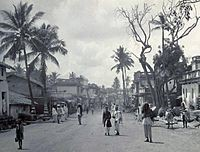
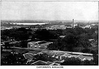
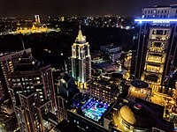
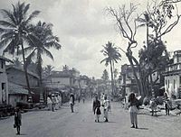
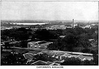
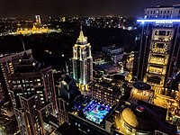

Bengaluru is the capital and largest city of the southern Indian state of Karnataka.
It has a population of more than 8 million and a metropolitan population of
around 11 million, making it the third most populous city and fifth most populous
urban agglomeration in India, as well as second largest urban agglomeration in
South India, and the 27th largest city in the world. Located on the Deccan Plateau,
at a height of over 900 m (3,000 ft) above sea level, Bangalore has a pleasant climate
throughout the year, with its parks and green spaces earning it the reputation as the
"Garden City" of India. Its elevation is the highest among the major cities of India.
The city's history dates back to around 890 CE, as found in a stone inscription found at the
Nageshwara Temple in Begur, Bangalore. In 1537 CE, Kempé Gowdā, a feudal ruler under the Vijayanagara
Empire, established a mud fort, considered the foundation of modern Bangalore and its oldest areas,
or pétés, which still exist. After the fall of the Vijayanagar Empire, Kempe Gowda declared independence
in 1638, a large Adil Shahi Bijapur army defeated Kempe Gowda III, and Bangalore was came under Shahaji
Bhonsle as a jagir which later became his capital. The Mughals later captured Bangalore and sold it to Maharaja
Devaraja Wodeyar II of the Kingdom of Mysore.When Haider Ali seized control of the kingdom, the administration
of Bangalore passed into his hands.In the 19th century, Bangalore essentially became a twin city, with the "pētē",
whose residents were predominantly
Kannadigas and the cantonment created by the British.Throughout the 19th century,
the Cantonment gradually expanded and acquired a distinct cultural and political salience as it was governed directly
by the British and was known as the Civil and Military Station of Bangalore. While it remained in the princely territory
of Mysore, Cantonment had a large military presence and a cosmopolitan civilian population that came from outside the
princely state of Mysore, including British and
Anglo-Indians army officers.
After India's independence in August 1947, Bangalore remained in the newly carved Mysore State of which the Maharaja of
Mysore was the
Rajapramukh (appointed governor).
The "City Improvement Trust" was formed in 1945,and in 1949,the "City" and the "Cantonment" merged to form the Bangalore
City Corporation.The Government of Karnataka later constituted the Bangalore Development Authority in 1976 to coordinate
the activities of these two bodies.Public sector employment and education provided opportunities for Kannadigas from the
rest of the state to migrate to the city.
   
  